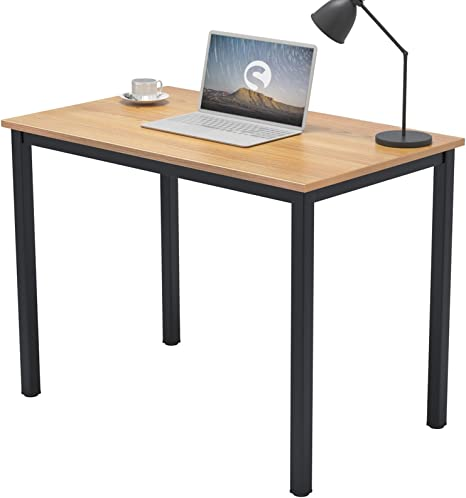

All gaming setups are different and uniqe in there own ways but there are pricebels and general things all setups have in common one of which is the system its self and a tabel to support your stuff.
All setups are different no matter how different they are. Setups are ment to express who youb are in an office space and thats fine but there are some things you NEED tand you can find them in the sources below.
Personalization can go many ways to express your self so how do you do it?, Simple! LIGHTS and alot of them because if you can make you lighting in your office change you can instently convey what your trying ot convey.Lighting is everything.
If you wonder why your set up stills looks bad even after you followed our steps then perhaps you should try de-clutering your office space, somethimes all it needs is to lose a lil bit of self to become perfect. I would also recomend you get a cable box and cabel brackets to keep yours wires managed.